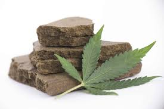

Cannabis er et stof, der kommer fra cannabisplanten og kan anvendes til medicinske eller rekreative formål. Det indeholder flere aktive stoffer, herunder THC og CBD, som kan have forskellige virkninger på kroppen. fx effekter fra THC kan være afslapning, øget appetit, forbedre humor. der er også dårlige effekter fx. angst, paranoia, nedsat hukommelse. der er ikke kun en slags cannabis der er forskellige former hvor fx bladende ser andereledes ud Thc niveauet kan være højre eller laver farven fx blå grøn rød

Cannabis kan bruges på flere måder, herunder ryge, dampe eller spise (edibles) det i spiselige produkter. Brug af cannabis kan have forskellige virkninger afhængigt af dosering og anvendelse. nogle former af cannabis planter er kraftigere end andre med mere THC niveau.
Brug af cannabis kan medføre visse risiko som hukommelsesproblemer, angst, afhængighed og nedsat reaktionstid. Det er vigtigt at forstå disse risici før brug. Du kan også være meget uheldig og få en hash psykose symptomerne kan inkludere hallucinationer, paranoia og forvirring, og de kan begynde op til to uger efter indtagelse.
Cannabis har vist sig at have potentielle medicinske anvendelser, herunder lindring af smerter ved kroniske sygdomme, behandling af kvalme ved kemoterapi og hjælp til epilepsi. Det er dog vigtigt at konsultere en læge, før man bruger cannabis til medicinske formål.